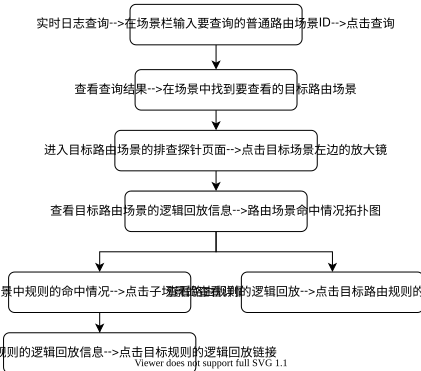
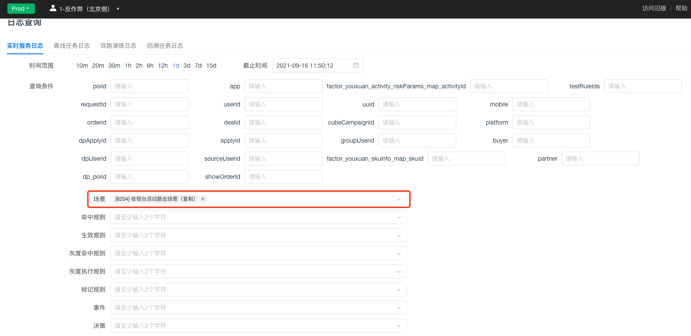
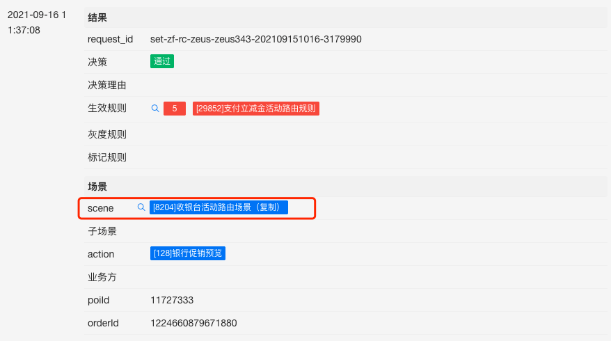
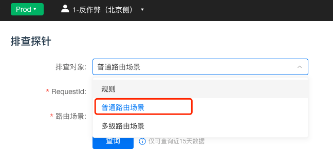
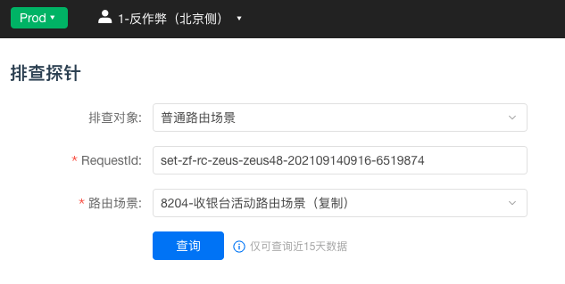
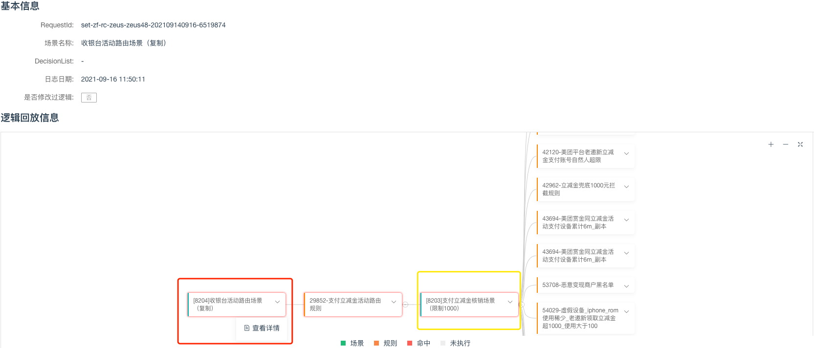

说明：排查探针支持普通路由场景查询
一、背景
功能介绍：在实时日志中增加路由场景日志信息，同时增加普通路由场景执行回放拓扑图（入口：1. 策略排查-->普通路由场景日志信息的场景模块-->场景-->排查探针（点击左侧放大镜进入）；2.策略排查--> 排查探针tab-->排查对象选择普通路由场景）
二、名词解释
- 普通路由场景：相比于普通场景，普通路由场景可支持双层，决策流模式，即一堆规则的集合，支持按照逻辑进行分流，满足指定条件可以指定走向在每个节点进行条件设置，实现最终流向
三、操作指南
1.用户操作流程说明

2.详细操作流程说明
方式1:策略排查-->日志查询-->普通路由场景日志信息的场景模块-->场景-->排查探针（点击左侧放大镜进入）
|
说明 |
页面 |
|---|---|
|
 |
|
 |
|
|
|

方式2:策略排查--> 排查探针tab-->排查对象选择普通路由场景
|
说明 |
页面 |
|---|---|
|
  |
|

|

四、特殊说明
- 目前多极路由场景的逻辑回放信息入口仅可通过日志查询结果中的场景模块里面的多级路由场景左侧的放大镜点击进入，暂不支持像规则一样从排查探针入口进去
- 目前日志中路由规则前面的放大镜图标暂不支持点击，查看其逻辑回放信息可以先点击其所在路由场景前面的放大镜进入路由场景排查探针页面后再点击其逻辑回放
- 多极路由场景逻辑回放信息拓扑图会将命中的路由规则、子场景用红色框标记出来，对于路由规则，可以查看命中/没命中路由规则的逻辑回放信息；但是对于子场景，目前只支持查看命中子场景中配置的规则的逻辑回放信息
五、FAQ
Q1：multiLevelRouterSceneId是什么？
--A：multiLevelRouterSceneId是多级路由场景在日志信息中的索引字段，如果想在日志查询页面根据多级路由场景ID查询目标日志信息，需要现在日志配置中配置一下multiLevelRouterSceneId字段
补充说明：multiLevelRouterSceneId是分词字段，支持输入多个多级路由场景ID查询